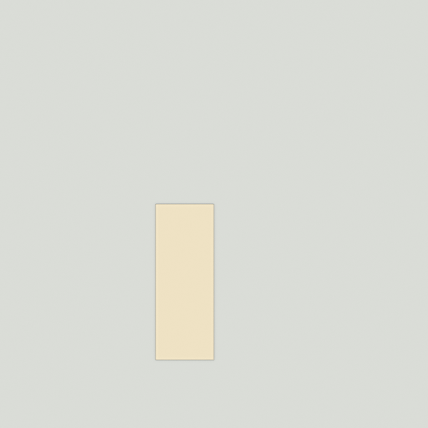
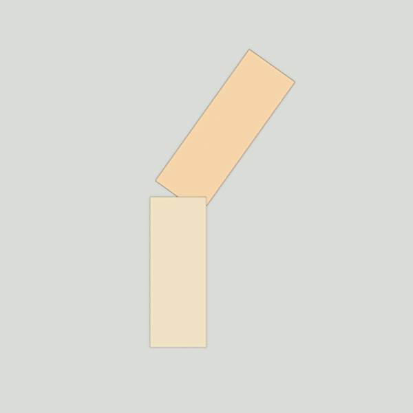
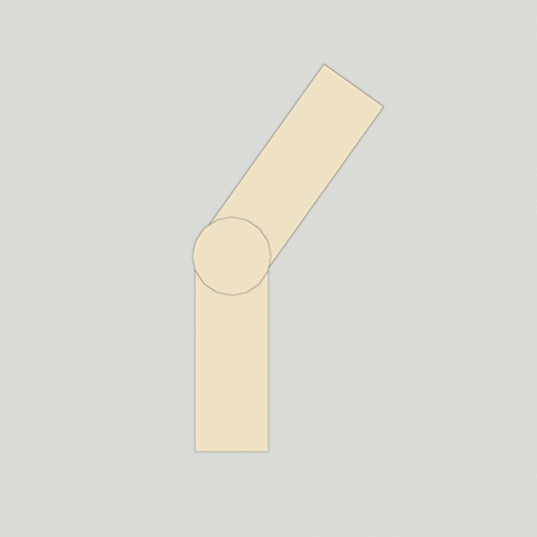

Reference · Godot 4.7 · Carrot Game
Godot level blockout
Navigating the 3D editor without a numpad, building with CSG, and tested recipes for paths, hills, ramps and streams. Built for Lesson 15.
Navigate the 3D view (no numpad)
| MMB drag | Orbit around the centre of the view |
| Hold RMB (or Shift+F) | Free-look: move the mouse to look, WASD to fly, E up, Q down, Shift faster, Alt slower |
| Axis gizmo (top right) | Click a coloured circle to get a straight Top / Front / Side view. Click the green Y circle for a top-down map view |
| Viewport menu (⋮ three dots) | Perspective / Orthogonal and view settings. In orthogonal views, RMB drag pans |
Source: Introduction to 3D (navigation section). The docs' “Keypad 5” toggle needs a numpad, so use the viewport menu instead.
Move, rotate, size
| W / E / R | Move / rotate / scale mode, then drag the gizmo handles |
| Y | Toggle grid snap (also the magnet icon). Or hold Ctrl while dragging |
| Inspector → Transform | Type an exact Position and Rotation (degrees). Usually faster than dragging |
| Inspector → Size / Radius / Height | Resize CSG shapes here, not with scale (same rule as collision shapes) |
| Ctrl+D | Duplicate the selected node |
| Ctrl+A | Add a child node to the selection |
| Blender-style G/R/S | Optional: Editor Settings → Shortcuts → Spatial Editor, bind Begin Translate/Rotate/Scale Transformation. Then e.g. G Y 2.5 Enter moves 2.5 m up (Y is up in Godot) |
Sources: Introduction to 3D, CSG tools
Godot axes for this game
| +Y | Up |
| −Z | North = up the screen = the direction the camera looks. Progress goes this way |
| +X | East (right on screen) |
| Units | 1 = 1 metre (same as Blender) |
The camera sits 6 m up and 8 m south (+Z) of the rabbit. Never put tall things between a path and the camera.
Your forest scene
Forest level.gd ├─ Blockout collision ✔ (solid) │ └─ Ground box 60 × 1 × 60 ├─ Paths collision ✘ (paint) │ ├─ PathSegment box 3 × 0.02 × 10 │ └─ Clearing cylinder r 4 ├─ Rabbit start position ├─ FollowCamera follows by itself ├─ HUD, WinJingle └─ Carrots drop carrots here
Add shapes as children of Blockout or Paths: select the parent, then Ctrl+A.
CSG building blocks
| Node | Key properties |
|---|---|
CSGBox3D | Size (x, y, z) |
CSGCylinder3D | Radius, Height, Sides (default 8), Cone |
CSGSphere3D | Radius: rounded bushes and boulders |
CSGCombiner3D | A group. Use Collision makes everything inside solid |
| Operation (on each shape) | Effect |
|---|---|
| Union (default) | Adds the shape |
| Subtraction | “The second shape is subtracted from the first, leaving a dent with its shape.” Order matters: it cuts the shapes above it in the tree |
| Intersection | Keeps only the overlap (rarely needed) |
Colour a shape: Material → New StandardMaterial3D → Albedo colour. Keep most things grey. Colour only meaning: water blue, path sand.
Source: Prototyping levels with CSG. Keep CSG simple; it's for prototyping.
Recipe: the path



- Select
PathSegment, Ctrl+D. Set Size z to the length you want (keep x = 3 m wide, y = 0.02). - Inspector → Rotation Y to turn it (e.g. 30). Move it so its end touches the previous strip. Work in the top view (green Y circle).
- Duplicate
Clearing, set Radius about 1.6, and put it on the joint to round the corner. Larger radius (4–7 m) = a clearing. - Keep everything at Y = 0.01, in
Paths(no collision).
Why no collision? Tested: the rabbit walks over bumps of 2–5 cm, but a 10 cm lip stops it. A path is just paint on the ground. The rabbit walks on Ground underneath.
Recipe: hill and ramp (tested)
| Hill | CSGBox3D in Blockout, e.g. Size 8 × 1 × 8, Position Y = 0.5 (half its height) |
| Ramp length | height ÷ sin(angle), plus 0.3 m. For 1 m at 20°: about 3.2 m |
| Ramp | CSGBox3D Size 3 × 0.2 × 3.2, Rotation X = 20 makes it rise toward north (up the screen), −20 toward south, Position Y ≈ 0.4. Then nudge it until the high edge meets the hill's top and the low edge touches the ground |
| Check | Look from the side (red X circle): no step at either end |
Tested in the game: a 20° ramp takes the rabbit onto a 1 m hill without jumping.
Recipe: stream (tested)
- CSGBox3D in Blockout, after Ground: Size 60 × 0.5 × 2.5, Position Y = −0.25, Operation = Subtraction. That digs a 0.5 m deep bed.
- Way out: the rabbit can't walk up the vertical bank. Add a ramp CSGBox3D after the stream box (so it isn't cut away), from the bed floor up to the far bank at about 20°. Or put a bridge (a box on top, at Y ≈ 0.15) across.
- Blue water: add a thin box in
Paths(no collision) at the bed bottom, with a blue material.
Recipe: trees, landmark, borders
| Trunk | CSGCylinder3D Radius 0.5, Height 5, Position Y = 2.5. Ctrl+D to plant more |
| Bush / boulder | CSGSphere3D Radius 0.6–1.2, sunk halfway into the ground |
| Landmark | Big and unique: a cylinder r 1.6 h 1.4 + box roof at Y ≈ 3.3 (your future well). Visible from the start |
| Level border | A row of trunks or a long low hill. Friendlier than falling off the edge |
Your rabbit's metrics (measured)
| Metric | Value | Design rule (my suggestion) |
|---|---|---|
| Speed | 4.5 m/s | No long empty stretches |
| Running jump | 1.89 m high, 5.7 m long | Ledges ≤ 1 m, gaps ≤ 2.5 m |
| Max slope | 45° | Ramps 15–25° |
| Bumps | ≤ 5 cm OK, 10 cm blocks | Anything taller needs a ramp or a jump |
| Size | 1.15 m tall, 0.6 m wide | Paths ≥ 3 m wide |
Metrics idea: The Level Design Book: Metrics. Rules for 4–6-year-olds are my suggestions, not from a source.
Carrots
- Drag
carrot/carrot.tscnontoCarrots, then Ctrl+D. They're counted automatically. - Breadcrumbs: every 4–6 m, and from each carrot the next is visible.
- On a hill: carrot Position Y = the hill's height.
- One secret, one group at the finale.
Before the playtest
- Every carrot reachable with sloppy input
- The rabbit is never hidden from the camera for long
- No dent without a way out, no step without a ramp
- The landmark or the first carrots are visible from the start
- The border is obvious
Process: Blockout → Playtesting (The Level Design Book)